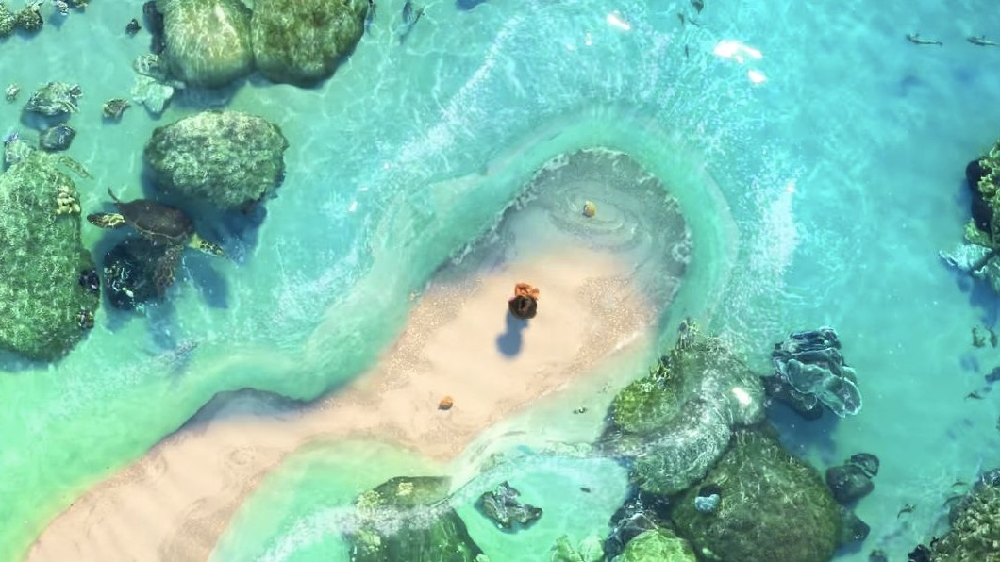
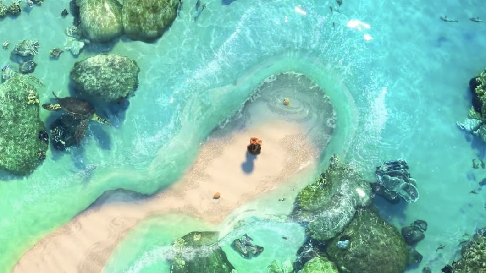

Di pulau Motunui di Polinesia, penduduk menyembah dewi Te Fiti, yang membawa kehidupan ke lautan, menggunakan batu pounamu sebagai jantung dan sumber kekuatannya. Maui, dewa setengah jadi dan penguasa pelayaran, mencuri jantung dewi Te Fiti untuk memberi kekuatan penciptaan pada manusia. Namun, Te Fiti hancur, dan Maui diserang oleh orang lain yang mencari jantung dewi Te Fiti: Te Ka, iblis vulkanik. Dalam pertarungan, Maui diledakkan dari langit, kehilangan pancing raksasa sihirnya dan jantung dewi Te Fiti ke kedalaman laut.
Satu milenium kemudian, lautan memilih Moana, putri kepala Motunui Tui, untuk mengembalikan jantung dewi Te Fiti. Namun, Tui tiba dan membawa Moana pergi, menyebabkan dia kehilangan jantung dewi Te Fiti. Tui dan ibu Moana, Sina, mencoba menjauhkannya dari laut untuk mempersiapkannya menjadi kepala pulau. Enam belas tahun kemudian, sebuah kutukan menyerang pulau itu, menyebabkan vegetasi mati dan tangkapan ikan menyusut. Moana menyarankan untuk pergi ke karang pulau untuk mencari lebih banyak ikan dan mencari tahu apa yang terjadi, tetapi Tui melarangnya. Moana mencoba menaklukkan karang tetapi dikuasai oleh pasang surut dan terdampar kembali di Motunui.
Nenek Moana, Tala, menunjukkan padanya sebuah gua rahasia tempat sejumlah kapal disembunyikan, mengungkapkan kepada Moana bahwa orang-orang mereka dulunya adalah para pelayar, tetapi mereka berhenti ketika Maui mencuri jantung dewi Te Fiti karena lautan tidak lagi aman tanpanya. Tala menjelaskan bahwa kegelapan Te Ka meracuni pulau, tetapi bisa disembuhkan jika Moana menemukan Maui dan membuatnya mengembalikan jantung dewi Te Fiti, yang dewi Te Fiti berikan kepada Moana. Tak lama kemudian, Tala jatuh sakit dan, ketika berada di ranjang kematiannya, memberitahu Moana bahwa ia harus pergi untuk mencari Maui.
Pada malam yang sama, Moana berlayar di atas camakau yang ditemukan di gua. Dia terjebak dalam topan dan terdampar di sebuah pulau di mana dia menemukan Maui, yang membanggakan tentang prestasinya. Moana menuntut agar Maui mengembalikan jantung dewi Te Fiti; namun, dia menolak dan menjebaknya di sebuah gua. Moana menemukan jalan keluar dan berhadapan dengan Maui, yang dengan enggan membiarkannya di camakau. Mereka diserang oleh Kakamora - perompak kecil berbaju kelapa - yang mencari jantung dewi Te Fiti, tetapi Moana dan Maui mengecoh mereka. Moana menyadari bahwa Maui tidak lagi menjadi pahlawan karena dia mencuri jantung dewi Te Fiti dan mengutuk dunia, dan dia meyakinkannya untuk menebus dirinya dengan mengembalikan jantung dewi Te Fiti. Pertama-tama Maui perlu mendapatkan pancing ajaibnya, yang terletak di Lalotai, Dunia Monster, dan dimiliki oleh Tamatoa, kepiting kelapa raksasa yang rakus. Maui dan Moana pergi ke Lalotai dan dia mengambil kailnya sementara Moana mengalihkan perhatian Tamatoa, tetapi Maui menemukan dia tidak bisa lagi mengendalikan perubahan bentuknya dan kehilangan kepercayaan diri, dengan cepat menjadi dikuasai oleh Tamatoa. Pemikiran cepat Moana memungkinkan mereka untuk melarikan diri dengan kail. Maui mengungkapkan bahwa tato pertamanya diperoleh ketika orang tua fananya menolaknya. Setelah diyakinkan oleh Moana, Maui mengajarinya seni berlayar, mendapatkan kembali kendali atas kekuatannya dan keduanya semakin dekat.
Keduanya tiba di pulau Te Fiti, hanya untuk diserang oleh Te Kā. Namun, Moana menolak untuk berbalik, mengakibatkan kail Maui rusak parah. Percaya bahwa jika dia kembali berperang dengan Te Kā, dia akan kehilangan kailnya yang adalah kekuatannya, Maui menjadi geram dan meninggalkan Moana, yang dengan tangisannya meminta lautan untuk menemukan orang lain untuk memulihkan jantung dewi Te Fiti. Samudra pun membantu dan mengambil jantung dewi Te Fiti dari Moana. Kemudian roh Tala muncul, menginspirasi Moana untuk menemukan panggilannya yang sebenarnya. Dia mengambil jantung dewi Te Fiti dan dengan keberanian penuh berlayar kembali untuk menghadapi Te Kā. Maui kembali, setelah berubah pikiran, dan mengulur waktu agar Moana dapat mencapai dewi Te Fiti dengan melawan Te Ka, menghancurkan kailnya dalam pertarungannya. Moana menemukan dewi Te Fiti hilang, dan menyadari bahwa Te Ka adalah dewi Te Fiti yang rusak tanpa jantungnya. Moana memberitahu lautan untuk membersihkan jalan, memungkinkannya mengembalikan jantung dewi Te Fiti, mengubah dewi Te Fiti ke semula. Dewi Te Fiti kemudian menyembuhkan samudera dan pulau-pulau dari kutukan. Maui meminta maaf kepada dewiTe Fiti, yang mengembalikan kailnya dan memberi Moana perahu baru sebelum jatuh tertidur lelap dan menjadi gunung.
Moana mengucapkan selamat tinggal pada Maui, kembali ke rumah di mana dia bersatu kembali dengan orangtuanya. Dia mengambil perannya sebagai kepala dan penunjuk jalan, memimpin orang-orangnya dalam pelayaran.
Moana adalah sebuah film petualangan fantasi musikal animasi komputer 3D Amerika 2016 yang diproduksi oleh Walt Disney Animation Studios dan film ke-56 dalam kanon fitur animasi Disney. Film tersebut disutradarai oleh Ron Clements, John Musker. Auli’i Cravalho, Dwayne Johnson, Temuera Morrison menjadi pengisi suara utama. Film tersebut dijadwalkan dirilis oleh Walt Disney Pictures pada 23 November 2016.